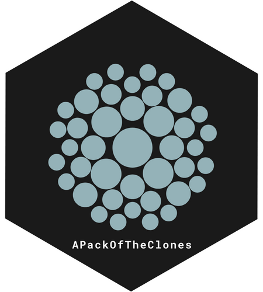
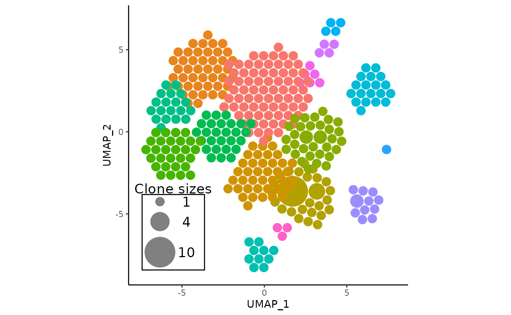

Update APackOfTheClones objects to the latest format
Source:R/updateApotc.R
updateApotc.RdThis generic function updates objects created by APackOfTheClones to the latest format or structure required by the package. It supports Seurat objects and ggplot objects generated by APackOfTheClones functions.
The current possible changes made by the function are:
when called on ggplots generated by
vizAPOTC()/APOTCPlot(), layer names will be made unique.
Examples
data("combined_pbmc")
apotc_plot <- vizAPOTC(combined_pbmc)
#> Initializing APOTC run...
#> * Setting `clone_scale_factor` to 0.3
#> * id for this run: vizAPOTC
#>
#> Packing clones into clusters
#>
[ ] 0%
[========== ] 21%
[================= ] 34%
[====================== ] 45%
[========================== ] 52%
[=============================== ] 62%
[=================================== ] 70%
[======================================= ] 78%
[========================================= ] 83%
[=========================================== ] 86%
[============================================= ] 91%
[============================================== ] 92%
[============================================== ] 93%
[================================================ ] 96%
[================================================ ] 97%
[================================================= ] 99%
[==================================================] 100%
#>
#>
#> repulsing all clusters | max iterations = 20
#>
[ ] 0%
[== ] 5%
[===== ] 10%
[======= ] 15%
[========== ] 20%
[============ ] 25%
[=============== ] 30%
[================= ] 35%
[==================== ] 40%
[==================================================] 100%
#>
#> Completed successfully, time elapsed: 0.15 seconds
#> Plotting...
#> * generated ggplot object
apotc_plot <- updateApotc(apotc_plot, verbose = TRUE)
apotc_plot
